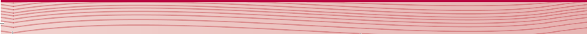

Chapter Six
Optical Instruments
Introduction
Optical instruments enhance the human eye’s ability to see distant and tiny objects, making it possible to observe stars and microorganisms that are otherwise invisible. These devices use light, along with lenses, mirrors, and prisms, to form clearer images. In this chapter, you will learn how various optical instruments work, including microscopes, telescopes, and cameras. The competencies developed will enable you to choose, use, and even construct simple optical instruments for different applications.

Think
Simple microscope
The size of an object as viewed by the eye is determined by the size of its image formed on the retina. The size of the image depends on the distance from the object to the observer’s eye and the angle subtended by the object at the eye, called angular size (θ). If you want to look closely at a small object, such as an insect, you bring the object close to your eye. By doing so, you increase the angular size and hence make the image on the retina as large as possible. However, your eyes cannot focus sharply on objects that are closer than a point at about 25 cm from the eye. This point is known as the near point of the eye. Moving an object closer to the near point of the eye increases the size of the image on your retina. But if you still move the object closer than the near point, the image will be fuzzy or blurred because the lens of the eye will no longer focus an image on the retina. Therefore, the closest comfortable distance for viewing an image is when an object is at this point. Thus, an object cannot be brought closer to the eye beyond the near point. To overcome this limitation, a converging lens can be used to enlarge the image of an object. The object can then be moved even closer to the eye, resulting in a large image formed on the retina. A lens used in this way forms a device known as a simple microscope.
